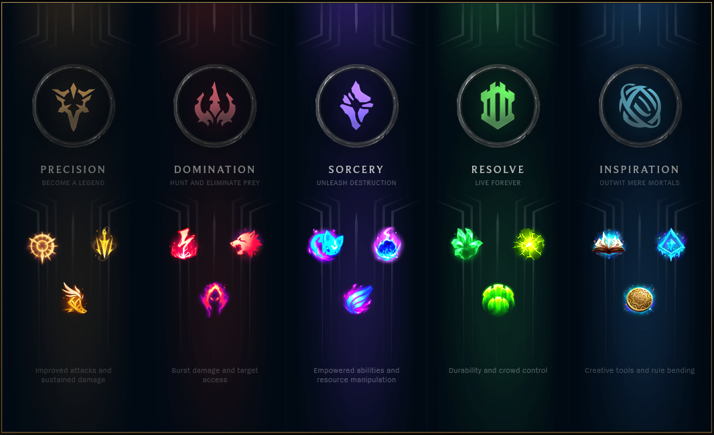
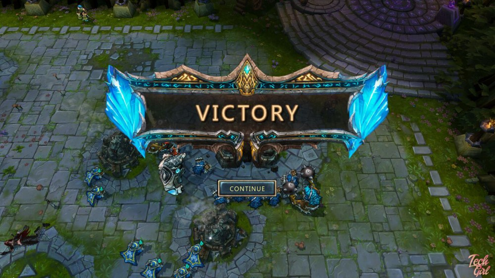

League of Legends(LOL) is a Multiplayer Online Battle Arena game where 2 teams of 5 people on each team seek to destroy the other's Nexus. Each player has a unique role that has to played out well in order to win team fights and ultimately win the game. Players control a single champion of their choice based on the position they are assigned. There are 5 positions in the game and over 130 champions to choose from. Every game usually requires 20-50mins to end. Every match is a fresh start.
In league, you are titled a Summoner. Each Summoner’s account has a Summoner level which goes up as more games are played. Currently, there is no maximum level cap and each level-up rewards you with Blue Essence (BE) and capsules which can be used to unlock champions and skins. Aside from BE and capsules, one can also acquire champions and their skins faster by purchasing Riot Points with real money. Every week, there is a new champion rotation in a group of ten champions available for all players to play. As you try different champions, you can find what champion suits your playstyle the most.
As previously mentioned, champions are player-controlled characters. Each champion has a unique skills, stats, strengths, and weaknesses. When the game begins, every champion starts at level 1. The maximum level is capped at 18 and as you level up, you can upgrade one of 4 abilities along with an increase in base stats.
Mages (ability power carries, APC) are powerful spell-casters who use their abilities to deal magic damage and disrupt enemies. They are typically ranged, and have lower defenses to balance their offensive capability. Since all of their damages come from their abilities, mages are one of the most interesting types of champions to play.
Marksmen (attack damage carries, ADC) primarily use their ranged basic attacks to deal sustained physical damage to single targets, termed damage-per-second (DPS). Just like the mages, ADCs are very fragile and vulnerable to damages. Thus, ADCs always need their teammates to protect them in order to effectively shut down their enemies.
Tanks/Bruisers are typically melee and have high defenses, but relatively low damage output compared to APCs and ADCs. Their job is to disrupt, disable, and protect, while dealing damage to enemies’ ADCs and APCs. They are also known as initiators.
Supports excel at protecting and empowering allies, and/or disrupting and crippling enemies so that allies can more effectively fight against the enemy team. Supports could be considered as a boring role because they usually don’t contribute much in damage. However, good supports always help their ADCs to win the game.
Slayers (assassins) are fragile champions with extreme mobility and massive burst damage. Their job is to melt down the opponent’s APC and/or ADC as soon as possible so that the enemy team does not have anyone to deal damage. Although assassins can kill champions real fast, if caught, they are as vulnerable as their targets.
Runes are a set of options that grant special attributes to your champion. These options are selected before game during Champion Select, or under the "Collection" tab in the client. A completed Rune combination can be saved as a Rune page. You are given 2 Rune pages and can buy more in the Shop.
Runes are organized into 5 Paths: Precision, Domination, Sorcery, Resolve, and Inspiration. Each Path follows 4 slots, and each slot offers a choice between 3 Rune options. The first slot is an extra-impactful, playstyle-defining Keystone Rune, and the following 3 slots are Lesser Runes.

/>Summoner spells are like extra abilities, which are chosen before each match in champion select and you can select two summoner spells. Compared to champion’s abilities, summoner spell cooldowns are relatively long, ranging from 1.5 to 5 minutes. Some are unavailable before reaching summoner level 10.
Items are purchased during a match with the gold you earn. They occupy your champion's inventory and grant bonus stats and special attributes. You can have up to 6 items, which will help you get stronger and win the game.
Turrets (towers): these are statue-like towers that fire powerful physical damage attacks. They target the first enemy to step in range. They will instantly re-target enemies who damage ally champions. There are 11 turrets in total for each team.
Inhibitors (inhibs): gem-like structures found at each base entrance. They do not attack, but are guarded by turrets. They take reduced damage from champions, regenerate health, and respawn 5 minutes after being destroyed. Respawn timers are shown as a colored ring (example). If an inhibitor is destroyed, the opposing team spawns extremely powerful minions in that lane.
Nexus: large gem-like structures found close to the spawn platforms, guarded by two Nexus turrets. Destroy the enemy Nexus to win!
Minions are NPCs that help push the lane. These AI-controlled soldiers spawn at the nexus and attack any enemy (including enemy's minions) they encounter along the way. Only the killing blow on a minion earns gold for your champion. However, you will gain experience on minions that die nearby regardless of the final blow.
